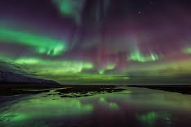

立即查看行程 & 预订
冰岛，这个被国家地理评为“一生必去”的地方，每年只有9月–次年4月能看到极光。
想知道今天晚上哪里最容易看到极光吗？
点这里查看实时极光预报 ↗
热门打卡地一键跳转
- 雷克雅未克（Reykjavík）——首都出发最方便
- 黄金圈经典路线
- 维克小镇（Vík）——黑沙滩+极光双重震撼
- 约库萨龙冰河湖（Jökulsárlón）——冰山漂浮，极光倒影绝美
- 柯克丘费尔（Kirkjufell）——冰岛最上镜的箭头山
蓝湖温泉官方订票通道（必须提前订！）
立刻预订蓝湖门票（2025年早鸟票8折）或者下载蓝湖官方APP： iOS版 / Android版
蓝湖温泉：旅行中必打卡的放松胜地
蓝湖（Blue Lagoon）是冰岛最著名的地热温泉，水温常年保持在37-40℃，富含硅、硫等矿物质，对皮肤极好。建议提前3-6个月订票！

冰岛必吃美食TOP 5
- 羊肉汤（Kjötsúpa）——暖身神器
- 发酵鲨鱼（Hákarl）——勇敢者的挑战
- 黑麦冰淇淋（Rúgbrauð með ís）——甜咸交织
- 龙虾汤（Humarssúpa）——鲜美到飞起
- Skyr——冰岛版高蛋白酸奶，随处可见
冰岛旅行实用链接集合
- 租车比价最全平台：Northbound（推荐）
- 冰岛天气实时查询：vedur.is
- 道路状况+一号公路实时路况：road.is
- 极光预报最准App：My Aurora Forecast
- 冰岛旅游局中文官网：visiticeland.com/zh
- 下载《2025冰岛17天环岛自驾攻略PDF》（8.7 MB）
紧急联系方式（手机里一定要存！）
- 冰岛报警/急救电话：112
- 中国驻冰岛大使馆领事保护：+354-5276688
- 有问题随时邮件联系我：icelandtrip2025@gmail.com
旅行者真实评价
“在约库萨龙拍到极光映在冰山上的那一刻，我整个人都傻了，太不真实了！”
—— 小红书用户 @冰岛追光者
“蓝湖真的超级治愈，泡完皮肤滑到不行，就是人真的多，建议选早场或晚场。”
—— @在冰岛泡温泉的猫


准备好了吗？
点我立刻开启冰岛之旅！雷克雅未克首都圈
冰岛首都&最大城市，全球最北的首都，90% 的冰岛行程都从这里开始。市区小巧精致，步行就能逛完。
- 必打卡：哈帕音乐厅（外形像极光玻璃）、彩色屋顶教堂 Hallgrímskirkja
- 必吃：Bæjarins Beztu Pylsur 热狗摊（克林顿、卡戴珊都吃过）
- 极光：市区光污染重，建议参加当地晚上8点的超级吉普追光团
推荐住宿：市中心 101 区，步行到主街 Laugavegur 只要5分钟。
黄金圈经典路线（Golden Circle）
冰岛最热门的一日游线路，全程300公里，包含三大王牌景点：
- 辛格维利尔国家公园（Þingvellur）——欧亚与美洲板块裂缝，可潜水 Silfra
- 盖锡尔间歇泉（Geysir）——每6-10分钟喷发一次
- 黄金瀑布（Gullfoss）——冬季一半结冰，气势更震撼
自驾4-5小时就能跑完，强烈建议加 Kerið 火山口湖（额外30分钟）。
南岸维克黑沙滩 + 飞机残骸
冰岛南岸精华段，黑沙滩 Reynisfjara 被国家地理评为“全球最美十大非热带沙滩”。
- 玄武岩柱洞、海蚀柱 Reynisdrangar、超级黑沙滩
- 1973年美军道格拉斯DC-3飞机残骸（网红打卡点，停在沙滩上40多年）
- 注意：背浪（sneaker wave）极危险，千万不要背对大海拍照！
维克小镇住宿便宜，超市 Bonus、Kronan 都有，是环岛中途理想落脚点。
南岸维克黑沙滩 + 飞机残骸
冰岛南岸精华段，黑沙滩 Reynisfjara 被国家地理评为“全球最美十大非热带沙滩”。
- 玄武岩柱洞、海蚀柱 Reynisdrangar、超级黑沙滩
- 1973年美军道格拉斯DC-3飞机残骸（网红打卡点，停在沙滩上40多年）
- 注意：背浪（sneaker wave）极危险，千万不要背对大海拍照！
维克小镇住宿便宜，超市 Bonus、Kronan 都有，是环岛中途理想落脚点。
约库萨龙冰河湖（Jökulsárlón）
冰岛最梦幻的景点之一，冰川融化形成的潟湖，无数千年冰块漂浮，旁边就是钻石沙滩。
推荐项目：
- 两栖船游湖（40分钟，近距离摸千年冰块）
- 钻石沙滩（Diamond Beach）——冰块块冰块像钻石散落在黑沙上
- 夜里留下来等极光，概率极高！
小贴士：停车场有厕所和咖啡车，别错过对面的 Fjallsárlón 冰河湖，人少同样美。